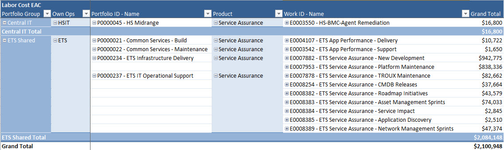
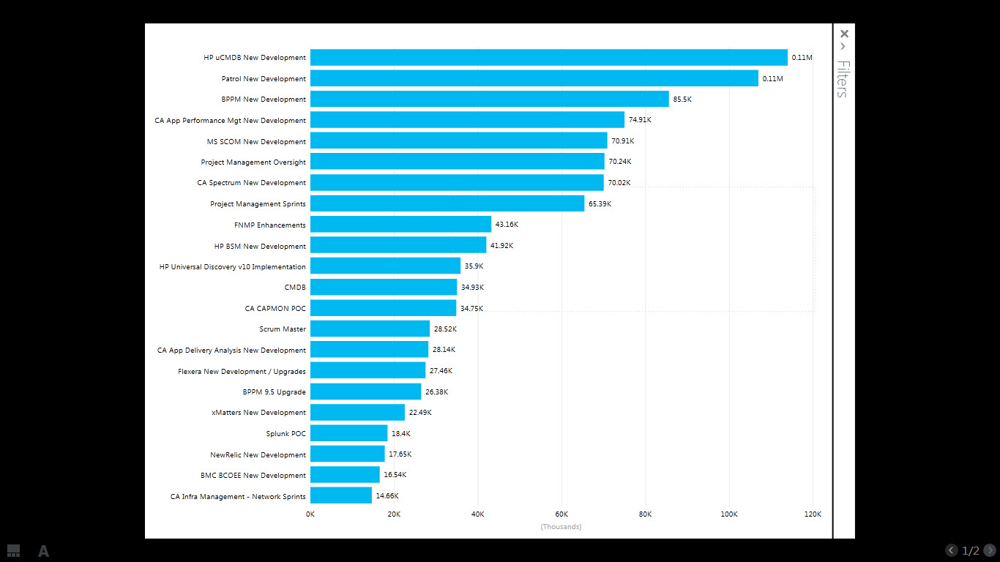
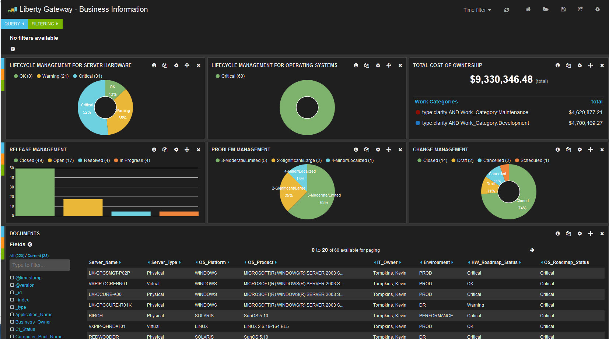
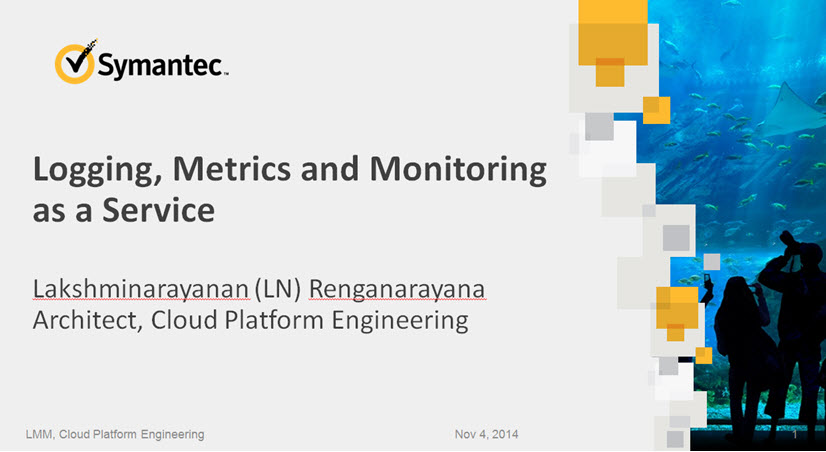
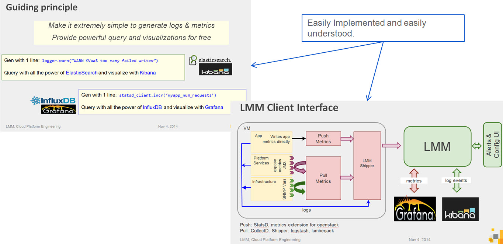

Service Assurance
This is what we do.
Created by Matt Keane / Service Assurance Team
Use the navigation arrows in the bottom right or the arrow keys on your keyboard to navigate the presentation. Also, you can press ESC on your keyboard to see a slide layout of the presentation.
Overall cost to the organization

Development $1m

Definition and Context
Our tracking is by product in the Work Effort view vs. capability which helps me to understand by product where we are spending our time/money. I would like to describe to you how the time spent in these product correlates to value in capabilities being developed and deployed to the Enterprise. Continue down for more detail. To see a more detailed list of Year in Review for Service Assurance, Click Here.
Application and Asset Discovery -- $255k
uCMDB, Troux, PM Sprints, HP Universal Discovery, FNMP - All of these products and aligned effort was focused on delivering Application and Asset Discovery capabilities. We built some proto-types of dependency mapping, enhanced compute and data accuracy, aligned new capacity and developed a roadmap/strategy to advance the capability.
Automation and Event Management (Central IT) -- $400k
Patrol, xMatters, BPPM, SCOM, PM Oversight, CA Spectrum, SCRUM Master. This was a focus area in 2014 where we collaborated with Hosting teams to implement closed loop automation and further instrument CI level KPI's that participate in automation through Remedy and xMatters. This ultimately reduced MTTR in several areas and saved in excess of 20FTE which were re-directed to offset other areas of the org.
Application Portfolio Management -- $185k
CA APM, HP BSM, CA App Delivery Analysis, New Relic. We spent a lot of time building out new Introscope environments and implementing self-service to the markets. We added a network transparent module to APM providing deeper network disgnostics. Also we moved the HP Synthetics solution to full SaaS retiring over $1m in existing contracts over the three year term of the new contract.
Innovation -- $100k
EXC!TE, Splunk, CA CAPMON. We spent $31k on our innovation/hackathon to design Next Generation Service Assurance through Exc!te. Additionally we put some effort and focus on centralizing a Splunk (self-service) environment and ran a POC of CA's Capacity tool which didn't yield a positive result.
Maintenance $1m

Definition and Context
Our tracking in the maintenance space is a little more deliberate, but also requires some context to drill into for better understanding of how the costs align to capabilities and work that is yielding a return to the organization. I will not hide the fact that we can do far better in streamlining and partnering with outside organizations on further reducing our maintenance cost. To see a more detailed list of Year in Review for Service Assurance, Click Here.
Vendor Management -- $220k
CA, HP, BMC, Troux, xMatters, Flexera, Splunk, New Relic, AppDynamics, DynaTrace, NetScout, NetMRI, etc.. - The team has been innundated with vendor meetings this year and this also represents a lot of my (mgt) time over 2014 dealing with vendors. This is unnacceptable and will be one area that we cut back on dramatically in 2015. I don't like dealing with vendors as it is, so to know that it cost the company over $200k in 2014 is crazy..
Core Infra (HW) support (300+ servers) -- $300k
BMC Suite, HP Suite, Splunk, xMatters, SCOM, CA Suite, Troux. This includes HW refresh, vulnerability remediations, consolidations, rebuilds, Incident Management.
Software/Agent Configurations (30k+ agents deployed) -- $300k
BMC Suite, HP Suite, Splunk, xMatters, SCOM, CA Suite, Troux. This includes Agent configs, trap configurations, software upgrades and implementations, script management, Incident Management. We have shifted some of the agent config work to support organizations in the markets in 2014 via self-service capabilities. Those savings in Service Assurance were redirected to development.
Team -- $60 - $100k
I capture all 1:1 and team meeting time in this cost category under maintenance. 14 people * 1:1 weekly for 30min = roughly $30k. I ran a weekly team meeting for an hour for about 3/4 of the year and now run it bi-weekly = roughly $53k, then random team events, etc.. make up the difference. My opinion is that this is the most important investement of them all !!
Appendix
Innovation in Real Time
A 42day Hackathon event where we keep our day jobs and just innovate around data to disrupt conventional thinking of monitoring and performance data consumption and capabilities.
Prototypes
B2D2 Won the hackathon with the following view of Application from a consolidated Data Lake model. Click the picture to go to the real prototype dashboard.
Prototypes
B2D2 Won the hackathon with the following view of Application from a consolidated Data Lake model. Click the picture to go to the real prototype dashboard.

Appendix
next steps on Exc!te (Brand as DataHUB)
Symantec recently presented at Open Stack an LMM (Logging, Monitoring and Metering) projectleveraging all open source capabilities to deliver a platform built for general consumption. Additionally, the team is looking to Open Source the LMM framework eventually.
Symantec's View of the LMM Model

Great guiding principle... "Make it extremely simple to generate logs & metrics. Provide powerful query and visualizations for FREE
What's Next?
Scoping - 1st Viable Release
We will need to establish a date for a 1st viable release of our own DataHUB with some real use cases. Would love Q1, but we shall see what capacity looks like. I will be looking for venture capitalists to invest in this vision...
Team
We will be shifting focus and scaling back in areas where we are not making a material impact ont he future state of Service Assurance. Allow customers to regain that control they are looking for and demonstrate the value in the data.
Industry Alignment / Collaboration
We need to start working outside of Liberty Mutual with partner companies that have a similar focus to streamline performance data delivery through open source tooling and proflieration of OPEN data consumption for the purposes of performance management. This path is disruptive to the industry and Liberty should play a role in driving this model in the industry as it helps us both influence the direction of the platform and save Liberty a lot of money in the process.